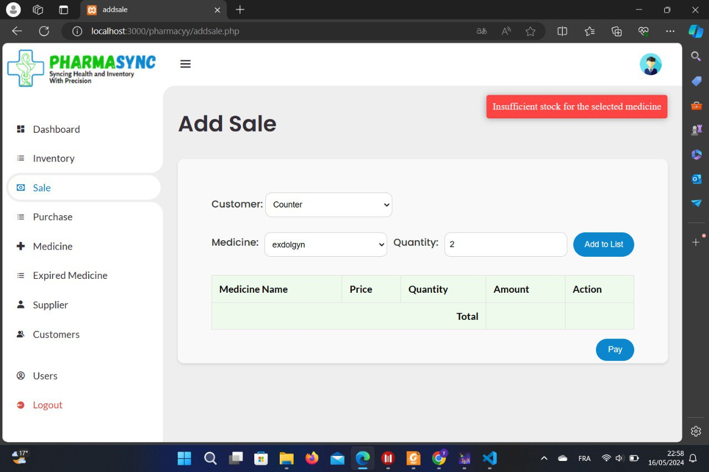

Web 1.0 refers to the early stage of the World Wide Web. It is characterized by static web pages with limited interactivity.
These pages were simple, consisting of text, images, and hyperlinks to navigate to other resources.
Here are some useful links to explore:
Click the button to change this text.